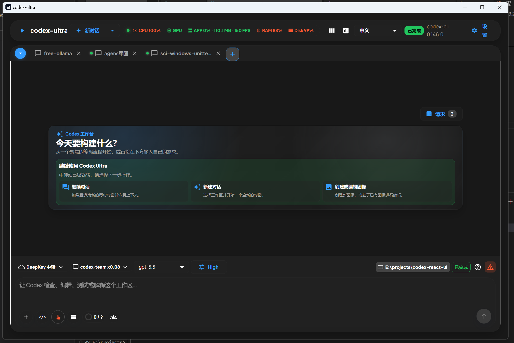
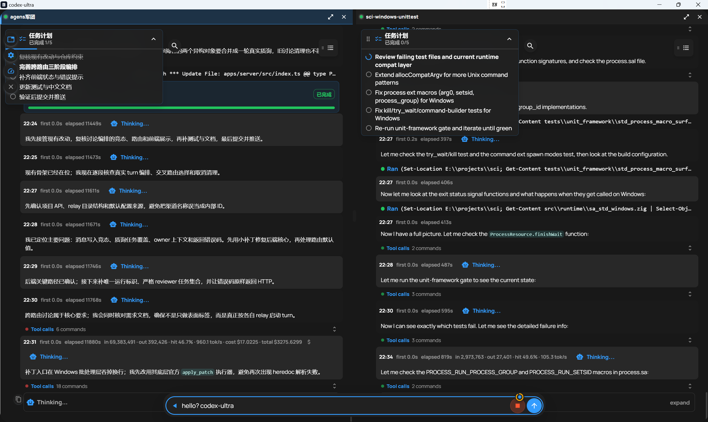
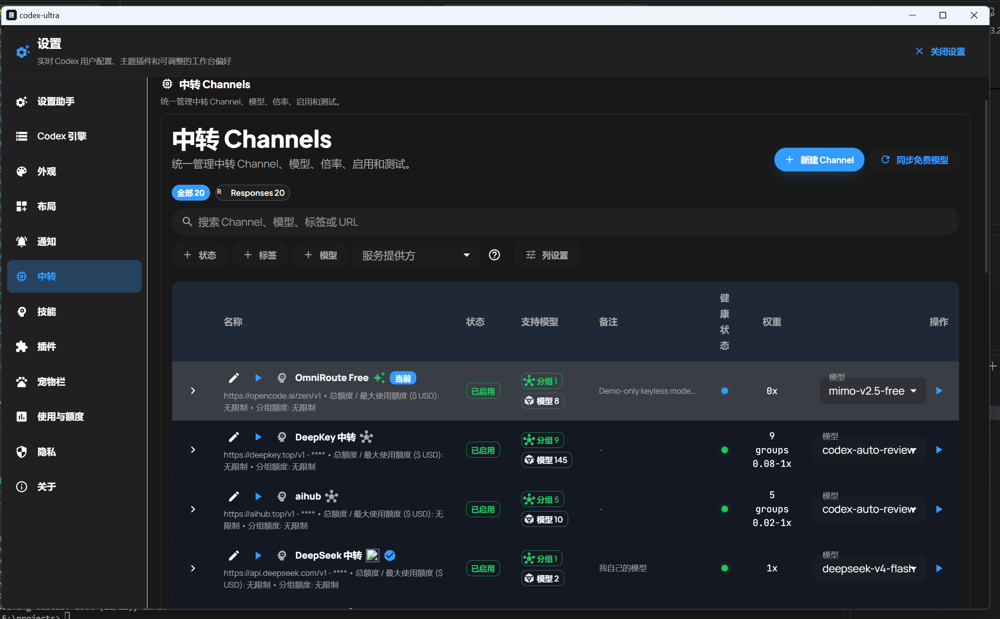

🚀 本地优先 · 零依赖一键运行 · Codex CLI 可视化工作台
面向 Codex CLI 的可视化 AI 编程工作台
在同一桌面窗口中管理历史对话、本地工作区、长任务计划、工具调用、代码差异、模型渠道和插件。优先在本机运行，安全私密。
irm https://install.codex-ultra.top | iex
在同一桌面窗口中管理历史对话、本地工作区、长任务计划、工具调用、代码差异、模型渠道和插件。优先在本机运行，安全私密。


